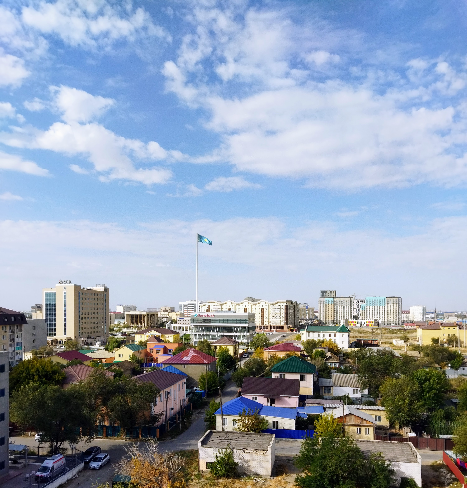

Qozogʻiston 2033-yilga qadar toʻrtinchi yirik neftni qayta ishlash zavodini quradi
Qozogʻiston Energetika vazirligi yiliga 10 million tonnagacha quvvatli yangi neft zavodini 2033-yilga qadar ishga tushirishni, uning joyini esa 2026-yil oxirigacha tanlashni rejalashtirmoqda.

Qozogʻiston toʻrtinchi yirik neftni qayta ishlash zavodini qurishni rejalashtirmoqda. Energetika vazirligi uni 2033-yilga qadar ishga tushirishni, zavod joylashadigan hududni esa 2026-yil oxirigacha aniqlashni koʻzlagan. Soʻnggi bayonotni vazirlikning Neftni tashish va qayta ishlash departamenti direktori Davlet Aribayev (Daulet Arykbayev) 2-oktabr kuni Olmaotada oʻtkazilgan KIOGE 2026 neft-gaz koʻrgazmasida bildirdi.
Loyiha tafsilotlari
Yangi zavodning quvvati yiliga 10 million tonnagacha neftni tashkil etadi. Joylashuv uchun toʻrtta hudud koʻrib chiqilmoqda: Ulytau, Atirau, Mangʻistau va Turkiston. Vazirlik hozircha aniq investitsiya hajmini eʼlon qilishni erta deb hisoblaydi.
Raqamlar
Qozogʻistonda hozir uchta yirik neft zavodi bor — Atirau, Pavlodar va Chimkent — ularning umumiy quvvati yiliga ~17,5–18 million tonna. Mavjud zavodlarni kengaytirish bilan birga umumiy quvvat ~27,7–28,8 million tonnaga koʻtarilishi, mamlakatning 2033-yilgacha boʻlgan maqsadi esa yiliga ~40 million tonnaga yetkazish koʻzlangan.
Nega muhim
Qozogʻiston rejalar bilan ichki yoqilgʻi taqchilligini bartaraf etishni va yoqilgʻi eksportyoriga aylanishni maqsad qilgan. Bosh vazir Oljas Bektenov (23-sentabr, hukumat majlisi): «Neftni qayta ishlash quvvatlarini kengaytirish ichki bozordagi yoqilgʻi narxlarining maqbulligi bilan bevosita bogʻliq», — dedi.